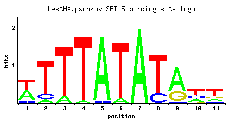

← All factors / TF RECORD
SPT15
YER148W, TBP, TBP1, BTF1
TATA-binding protein, general transcription factor that interacts with other factors to form the preinitiation complex at promoters, essential for viability
01 / RECOMMENDED MATRIX
Best-performing DNA-binding model.

Fisher’s P-valueNo data
Information content10.14
Max PWM score9.27
Recommended cutoff6.97
View and copy the recommended matrices ↘
Position frequency matrix (PFM)
A | 0.440 0.080 0.120 0.040 0.960 0.080 1.000 0.001 0.680 0.240 0.160 C | 0.120 0.120 0.001 0.001 0.040 0.001 0.001 0.200 0.040 0.240 0.120 G | 0.001 0.001 0.001 0.001 0.001 0.001 0.001 0.001 0.280 0.040 0.160 T | 0.440 0.800 0.880 0.960 0.001 0.920 0.001 0.800 0.001 0.480 0.560
Position count matrix (PCM)
A | 44 8 12 4 96 8 100 0 68 24 16 C | 12 12 0 0 4 0 0 20 4 24 12 G | 0 0 0 0 0 0 0 0 28 4 16 T | 44 80 88 96 0 92 0 80 0 48 56
Position weight matrix (PWM)
A | 0.32 -1.39 -0.98 -2.08 1.10 -1.39 1.14 -5.77 0.75 -0.29 -0.69 C | -0.41 -0.41 -5.19 -5.19 -1.50 -5.19 -5.19 0.11 -1.50 0.29 -0.41 G | -5.19 -5.19 -5.19 -5.19 -5.19 -5.19 -5.19 -5.19 0.44 -1.50 -0.12 T | 0.32 0.92 1.01 1.10 -5.77 1.06 -5.77 0.92 -5.77 0.41 0.56
02 / COMPARATIVE BENCHMARKS
Alternative candidate matrices 2
Historical matrix candidates from the original ScerTF database. Expand a source to inspect its original logo, scores, and matrix values.
SPT15Zhu et. al.P = No dataView matrix ↘
SPT15Zhao and StormoP = No dataView matrix ↘
03 / EXPERIMENTAL CONTEXT
Gene-level annotations and interactions.
Genes bound in ChIP-chip experiments 1 genes
No Data
Genes affected by TF deletion 1 genes
No Data
Genes supported by both experiments 1 genes
No Data